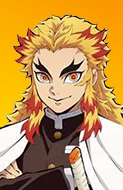

Selecione um personagem
-

- 
-

Muichiro Tokito
Muichiro Tokito é tido como um personagem pensativo, sem muitas expressões e que fala pouco. Ele também é extremamente confiante em suas habilidades como espadachim. É conhecido por dominar completamente o estilo de Respiração da Névoa, sendo o mais apto em combate quando o assunto é esse poder. Ele domina todas as 6 Formas desse estilo e criou seu próprio estilo como a 7 ª forma chamada nuvens obscuras.